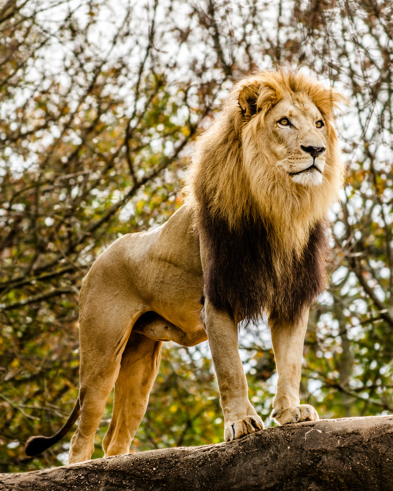
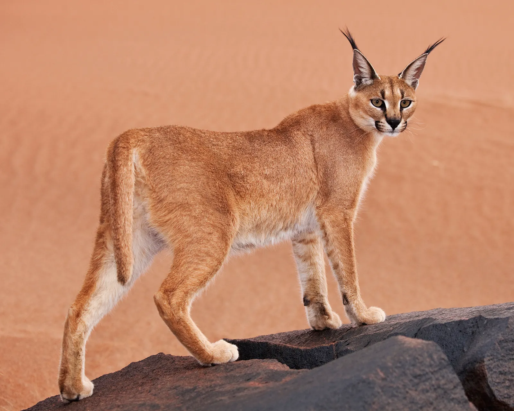
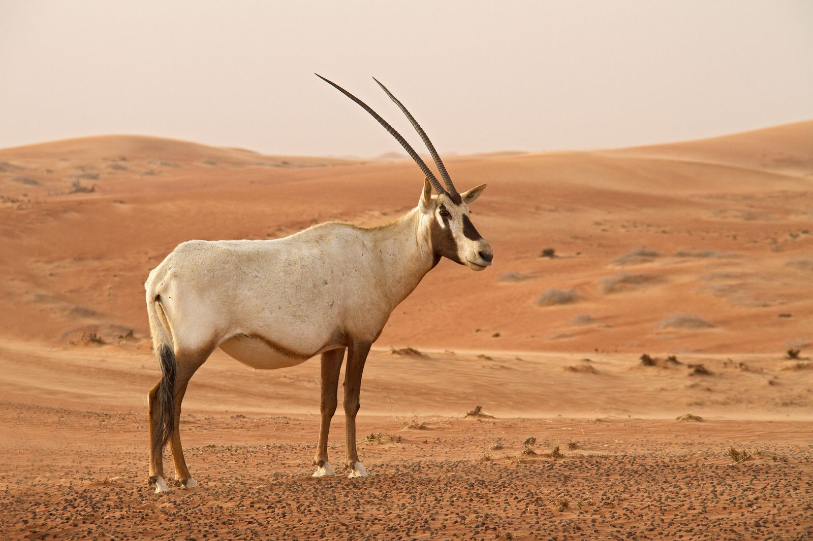
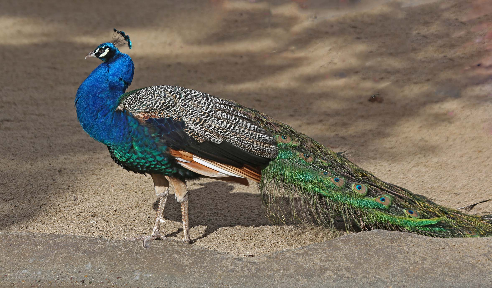
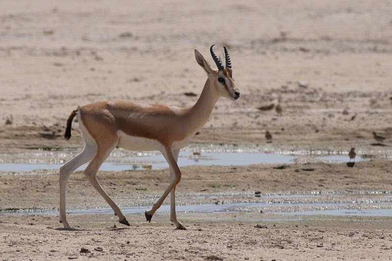

| Animal Name | Species | Lives in | Image |
|---|---|---|---|
| Lion | Panthera leo | Savannahs and grasslands |  |
| Caracal | Caracal caracal | Wooded and desert(ed) areas, and savannahs |  |
| Arabian Oryx | Oryx leucoryx | Desert(ed) areas |  |
| Indian Peafowl | Pavo cristatus | Forests and open grasslands |  |
| Arabian Sand Gazelle | Gazella marica | Flat desert(ed) areas |  |
Sources: